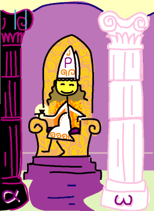

→
Damian Cugley →
Alleged Tarot 2002 →
png →
→
Damian Cugley →
Alleged Tarot 2002 →
png →
| « I. The Magician | III. The Empress » | |
|  | ||
Upright: intuition, dreams, anima
Reversed: suppressed feelings, unrecognized potential
Old Italian tarot decks had a Pope and Papess (female Pope) rather than Hierophant and High Priestess, and I have followed suit. To mediaeval Italians, the Pope represented religious authority, and if representing the Pope in a deck of cards is cheeky, the Papess is downright subersive—a definite dig at the Establishment. This is consitent with the origin of the Tarot deck as a gambling or gaming deck.
Nowadays we think of the Pope (Hierophant) as representing an advisor, not necessarily on spiritual and religious matters; the Papess can be read as standing for going outside regular channels, following one’s intuition, finding one’s own spiritual path. The High Priestess represents the same idea, but within the System rather than subverting it. This is a reflection of the idea that mystery and the hidden are an essential part of life, rather than an exception to the rule.
In this aspect the card is also known as Juno (the most most powerful of the Roman godesses, governing marriage, and identified with the Greek goddess Hera). The connection is with the Women’s Mysteries of the classical world.
The Papess sits between two pillars I have labelled Alpha and Omega (sometimes Cabalistically called Boaz and Jachin after the two pillars in front of Solomon’s temple in the Bible). They are coloured black and white representing female and male principles, the same colours used in the Chinese Yin-Yang symbol. The Alpha and Omega suggest that everything (or all personalities) combines these masculine and feminine traits. Or perhaps the Omega is there to allude to a biological analogy between the white male pillar and phallus...
See also Thirteen’s description on the Aeclectic Tarot site
If your browser supports SVG, then you should visit the SVG version of this page. It is so much more cool!